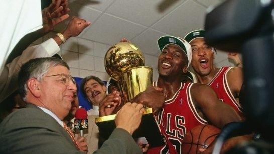
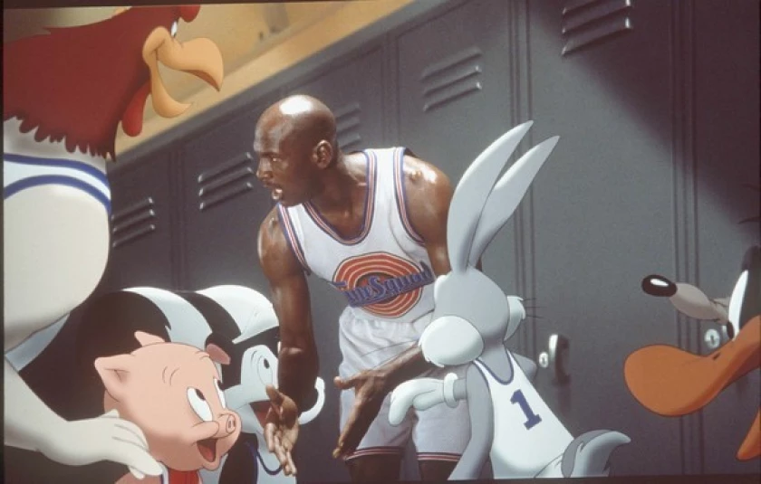
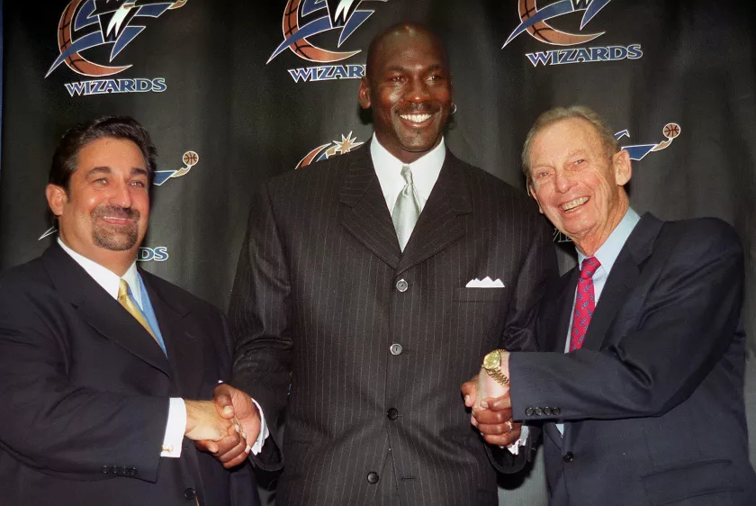

Michael Jordan, holding the championship trophy, celebrating with his Bulls team after their 6th and final championship against the Utah Jazz in 1998 at Vivint Arena, in Salt Lake City, Utah.
Here's a time line of Michael Jordan's Career
Feb. 17, 1963 - Born in Brooklyn, N.Y., to parents James Sr. and Deloris Jordan.
1979 - Cut from the varsity team at Laney High in Wilmington N.C.
1981 - After two varsity seasons, is selected a McDonald’s All-American and accepts a scholarship to University of North Carolina.
March 29, 1982 - Makes game-winning shot in NCAA tournament final against Georgetown.
June 19, 1984 - Selected No. 3 by the Chicago Bulls in the NBA draft after centers Hakeem Ojaluwon and Sam Bowie.
Aug. 10, 1984 - Scores 20 points in gold-medal game in the L.A. Summer Olympics.
May 16, 1985 - Selected rookie of the year after averaging 28.2 points, 6.5 rebounds and 5.9 assists.
Sept. 15, 1985 - Air Jordan 1 basketball shoes released by Nike.
Oct. 29, 1985 - Breaks his left foot in a game at the Golden State Warriors, misses the next 61 games before returning in time for end of season and playoffs.
April 20, 1986 - Scores an NBA-record 63 points in a playoff game, a 135-131 overtime loss to Boston.
April 16, 1987 - Scores 61 points in a loss to Atlanta, capping three-game stretch during which he averages 54.7 points. Wins first of 10 scoring titles.
Feb. 6, 1988 - Defeats Dominique Wilkins in the NBA dunk contest in Chicago. It’s the second consecutive dunk contest win for Jordan. One night later, wins his first All-Star game MVP award.
May 25, 1988 - Selected NBA most valuable player for first time, beating out Boston’s Larry Bird and the Lakers’ Magic Johnson.
May 7, 1989 - Makes a game-winning jumper in a deciding Game 5 first-round playoff series against the Cleveland Cavaliers. It’s simply known as “the Shot.”
Michael Jordan makes “The Shot” to lead the Chicago Bulls to a Game 5 victory over the Cleveland Cavaliers in the Eastern Conference playoffs.
June 10, 1989 - Days after firing Doug Collins, the Bulls hire Phil Jackson to be their fourth coach of the Jordan era.
June 5, 1991 - Playing in his first NBA Finals, Jordan rises up in the paint to dunk, switching hands midair for an acrobatic layup against the Lakers. “The Move” helps propel the Bulls to their first NBA title.
June 3, 1992 - Jordan makes six three-point shots in the first half of Game 1 of the NBA Finals against the Portland Trail Blazers, turning to the crowd and shrugging his shoulders. The Bulls win the series in six games.
Aug. 8, 1992 - Jordan scores 22 points as the “Dream Team” wins gold at the Barcelona Olympics. On the medal stand, Jordan is draped in the American flag, covering the Reebok logo on his team-issued warmup jacket.
June 20, 1993 - Jordan has 33 points, eight rebounds and seven assists, but it’s John Paxson who makes the game-winning three-pointer in the Bulls’ 99-98 win over the Phoenix Suns for title No. 3. Jordan is Finals MVP for the third time in a row.
Aug. 3, 1993 - After missing for three weeks, the body of Jordan’s father is found in a South Carolina creek, although positive identification comes 11 days later. Daniel Green and Larry Demery are later charged and convicted of murder.
Oct. 6, 1993 - In a room filled with coaches, teammates and NBA Commissioner David Stern, Jordan announces his retirement. He says there’s a possibility he could return.
Oct. 23, 1993 - In federal court, Jordan testifies that a $53,000 check he wrote to James (Slim) Bouler was to cover gambling losses. He originally said the check was a loan for Bouler to open a driving range.
Feb. 7, 1994 - Jordan signs a contract to play baseball for the Chicago White Sox. He plays for the double-A Birmingham Barons, hitting .202.
Michael Jordan makes a throw while playing for the Birmingham Barons during a game in 1994 against the Memphis Chicks
at Hoover Metropolitan Stadium in Hoover, Ala.(Jim Gund / Getty Images)
March 18, 1995 - Jordan rejoins the Bulls with a two-word fax: “I’m back.”
March 28, 1995 - Facing the Knicks in Madison Square Garden, Jordan, wearing No. 45, scores 55 points before finding Bill Wennington for the game-winning jumper. It was the record for the most points scored by an opponent at the Garden — a record Kobe Bryant would break.
May 18, 1995 - The Bulls are eliminated in the second round of the playoffs by Shaquille O’Neal and the Orlando Magic. It’s the first playoff series Jordan has lost since June, 3 1990.
April 21, 1996 - Alongside Toni Kukoc, Scottie Pippen and newly acquired Dennis Rodman, the Bulls beat the Washington Bullets 103-93 to win their 72nd game of the season, an NBA record. Jordan is the league’s MVP.
June 16, 1996 - The Bulls cap a postseason in which they lost only three times by beating the Seattle SuperSonics 87-75. Jordan wins his fourth Finals MVP.
June 13, 1996 - Jordan signs a one-year deal worth $30 million, the biggest single-season contract in American team sports history.
Nov. 15, 1996 - Space Jam, a movie starring Jordan alongside Bugs Bunny and the rest of the Looney Toons, is released. The movie grossed $230 million despite mixed reviews.

Michael Jordan made his big screen debut in “Space Jam” to mixed reviews, although it was a box-office hit.(Warner
Bros.)
June 11, 1997 - A physically depleted Jordan scores 33 in Game 5 of the Finals in what will be known as “The Flu Game.”
June 13, 1997 - Jordan and the Bulls win their fifth title, beating the Utah Jazz in six games. Jordan scores 39 in the clincher, winning another Finals MVP.
July 24, 1997 - The Bulls sign Phil Jackson to a one-year deal worth $6 million, but management makes it clear that it will be his last season with the Bulls, setting the stage for “The Last Dance.”
July 14, 1998 - Jordan scores 45, including a title-winning jumper after he nudges Utah’s Byron Russell before burying an open shot. Chicago wins its sixth title and Jordan collects a sixth Finals MVP. It’s the last basket he’ll make for the Bulls.
Jan. 13, 1999 - Saying he is mentally exhausted, Jordan retires from the NBA for a second time.
Jan. 19, 2000 - Jordan becomes part owner and team president of the Washington Wizards. His tenure is defined by the decision to select center Kwame Brown out of high school with the No. 1 overall pick in the 2001 NBA draft.

Michael Jordan is flanked by Washington Wizards owners Ted Leonsis, left, and Abe Pollin after getting hired as
president of basketball operations during a news conference on Jan. 19, 2000, at MCI Center.(Mario Tama / AFP via Getty
Images)
Sept. 25, 2001 - Jordan comes out of retirement (again), this time suiting up for the Wizards. He averages 22.9 points in 60 games in his first season back.
April 16, 2003 - Jordan plays in his last game in the NBA, scoring 15 points.
May 7, 2003 - Wizards owner Abe Polin fires Jordan from his role as team president after three-plus unsuccessful years.
June 15, 2006 - Jordan purchases a minority stake in the Charlotte Bobcats from BET founder Robert Johnson, becoming the team’s “managing member of basketball operations.”
Sept. 11, 2009 - Jordan is inducted into the Naismith Memorial Basketball Hall of Fame, delivering a scathing speech of the people who doubted him.
March 17, 2010 - Jordan buys majority ownership of the Charlotte Bobcats, now known as the Hornets, for $275 million, becoming the first former NBA player to become a majority owner.
"If somebody says no to you, or if you get cut, Michael Jordan was cut his first year, but he came back and he was the best ever. That is what you have to have. The attitude that I'm going to show everybody, I'm going to work hard to get better and better."
- Magic Johnson (5-time NBA Champion - Los Angeles Lakers)
If you have time, you should read more about this incredible human being on his
Wikipedia entry.